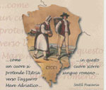

 Organizzata congiuntamente dall'Associazione Culturale Italo-Romena "Decebal" e dall'Assessorato alla Cultura del Comune di Trieste.
Nel 1719 con la patente dei porti franchi di Trieste e Fiume, Carlo VI d'Asburgo pone l'atto di nascita dei due porti e delle due città moderne. La storia successiva, l'economia, la cultura ed anche le relazioni umane fino ai giorni nostri hanno registrato tanti altri momenti di percorsi comuni e di contatto tra queste due città tra le quali si estende la penisola istriana. Ed è nella stessa Istria che si sono sviluppate altre storie e culture che hanno contribuito e contribuiscono ancora al progresso di tutto l'alto Adriatico e che hanno avuto ed hanno ancora come punto di riferimento le due grandi città. Fiume e Trieste, sono state, sono e saranno un punto di incontro anche delle varie culture e storie istriane. Per tale motivo si vuole trattare una cultura minore e poco conosciuta che però ha contribuito e contribuisce anche lei ad arricchire il grande patrimonio di queste terre, specchio ed immagine di quei microcosmi centro europei che Magris racconta in un suo libro.
Il piccolissimo popolo, come definisce Magris gli Istroromeni, trattati più volte nei suoi scritti, rappresentano una testimonianza viva di una storia lunga duemila anni che va da Trieste al Mar Nero e che proprio nel 2007, con l'adesione della Romania e della Bulgaria nella UE, avrà quasi completato un lunghissimo evo storico, aprendo una nuova pagina dei rapporti tra Stati, economie, popolazioni e culture.
La storia, la lingua e quegli istriani che ancora oggi si esprimono in istroromeno rappresentano questo tesoro culturale che sta rischiando di scomparire e di cadere nell'oblio assieme alle altre 3.000 lingue che cesseranno di esistere in questo secolo, secondo le stime dell'UNESCO.
Tale iniziativa dell'Associazione Decebal, del Gruppo Culturale del CRAL Autorità Portuale, dell'Associazione Culturale Puglia Club, dell'Associazione Euroculture, tutte con sede a Trieste, dell'Associazione Andrei Glavina di Roma, dell'Associazione AUT PRO ROM di Graz, e di molte altre (vedi scheda collaborazioni) avverrà prima a Trieste in coorganizzazione con l'Assessorato alla Cultura del Comune di Trieste, poi ad Udine in collaborazione con l'Università di Udine ed in Provincia di Pordenone, a gennaio 2008 verrà ospitata presso il Centro di Cultura umanistica romena nella sua sede di Venezia a Cannaregio, Palazzo Correr, a Fiume, presso il Museo Civico, a Graz presso il Museo Regionale Ioanneum. Il patrocinio è stato concesso dal Comune e della Provincia di Trieste e dell'UNESCO Italiana.
Le collaborazioni alla realizzazione tecnica e scientifica della mostra sono giunte con entusiasmo da parte dei professori di linguistica e geografia delle Università di Trieste, Udine, Timisoara, Pola e Zagabria ed è stata anche assicurata la partecipazione dei maggiori esperti mondiali della lingua Istroromena.
Uguale entusiasmo partecipativo è stato espresso dall'IRCI (Istituto regionale per la cultura istriano-fiumano-dalmata), dalla Comunità Croata di Trieste, dalla Dante Alighieri di Timisoara e dagli altri istituti coinvolti nel progetto.
Le Associazioni organizzatrici colgono così anche le indicazioni e gli inviti alla collaborazione che i Sindaci di Trieste e Fiume, gli Assessori alla cultura, i responsabili dei due musei civici e le altre autorità hanno espresso durante la presentazione della mostra sul Porto di Fiume a Trieste il 24 maggio 2006.
In concreto è stata programmata una mostra di documenti, foto, libri sulla storia, cultura e lingua istroromena, una conferenza di apertura ed alcune esibizioni artistiche.
Oltre al normale pubblico che una mostra di tale genere può attirare, considerando il fatto che la sua particolarità e specificità la rendono una curiosità interessante, il collocare tale iniziativa nel contesto più ampio delle lingue e culture minoritarie e della loro difficoltà di sopravvivenza, apre la mostra a un pubblico sicuramente più ampio.
Il messaggio che viene dalla storia degli istroromeni è un appello universale: cerchiamo di salvare le lingue e le culture dei nostri avi perché sono un patrimonio di tutti.
Tale manifestazione si colloca altresì come un proseguimento ed approfondimento della manifestazione sugli Istroromeni fatta 10 anni fa dalla Associazione Decebal alla Fiera di Trieste con il contributo della Commissione delle Comunità Europee ed il patrocinio del Comune e Provincia di Trieste.
Palazzo Costanzi, Piazza Piccola n. 2
16 giugno – 15 luglio 2007
Inaugurazione: Sabato 16 giugno ore 19
Orario feriale e festivo 10 – 13, 17 – 20.
Scarica programma.
June 1, 2007
© 2007 Rete Civica di Trieste